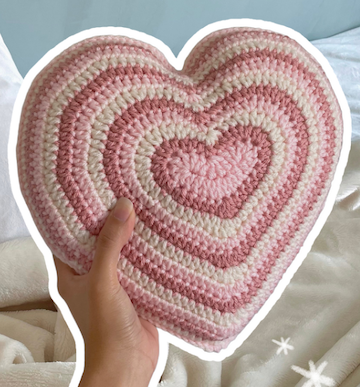

I have been crocheting for a little short of a year, and started it in the summer. I went to a meet up with other crocheters and they taught me the basics. From there I did kits and used patterns to devolop my knowledge of how to crochet. I am hoping to learn how to do freehanding soon and am well on my way.
I started crocheting because I found that finger knitting was fun, but not as free when it comes to what I could make. I also thought it would be a great thing to do to pass time which I usually have a good amount of. For me, it's also a great creative outlet that allows me to make anything I want to with the limit of what materials I have. I also found that I could make a lot of useful things like clothing or room decor.
My third most recent project was a small turtle, as they are one of my favorite animlas, and it allows me to learn about the sewing all of the parts together while also not being too difficult when being new to crocheting. My second most recent project was a leg warmer, though I frogged (ripping out stitches to undo work) the entire thing because I didn't like the color or how it fit. My most recent project, one in which I am not done with yet is another turtle that is made with more thin yarn and a smaller crochet hook. There is also more detail in this work, as I used more colors and have more pieces to sew. I have yet to sew on the shell and pose it by sewing more things into place, but it is coming along pretty well.